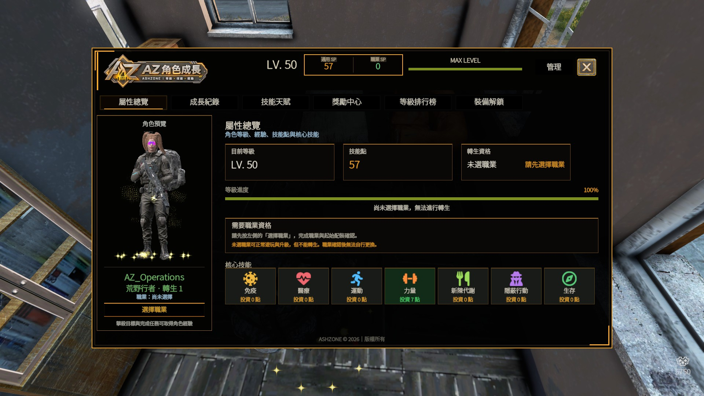
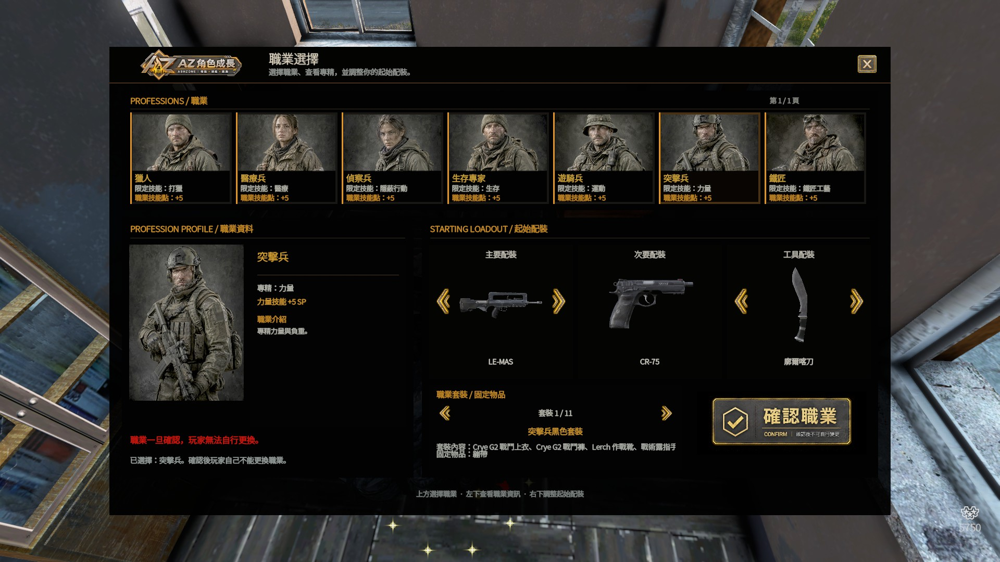
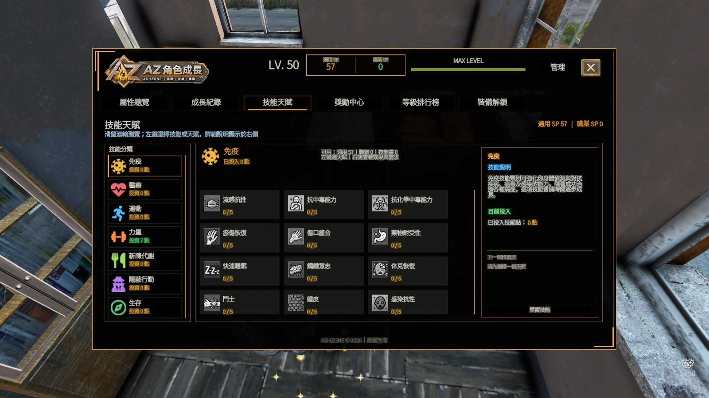
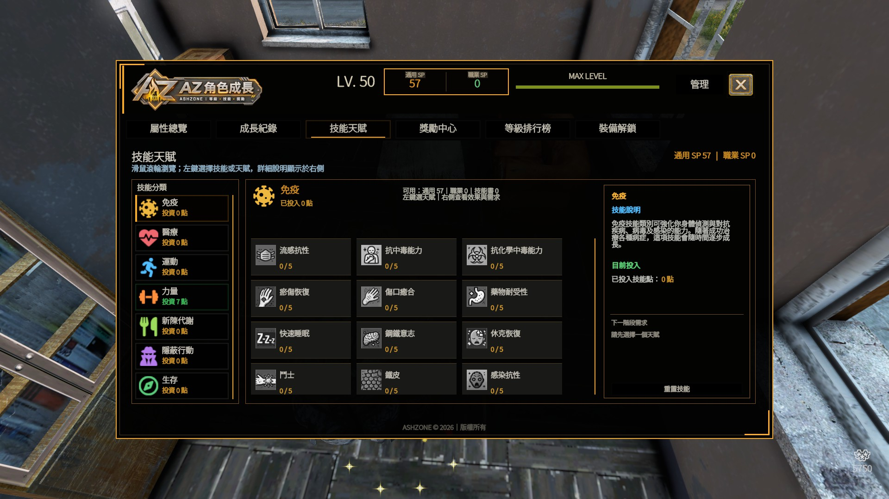
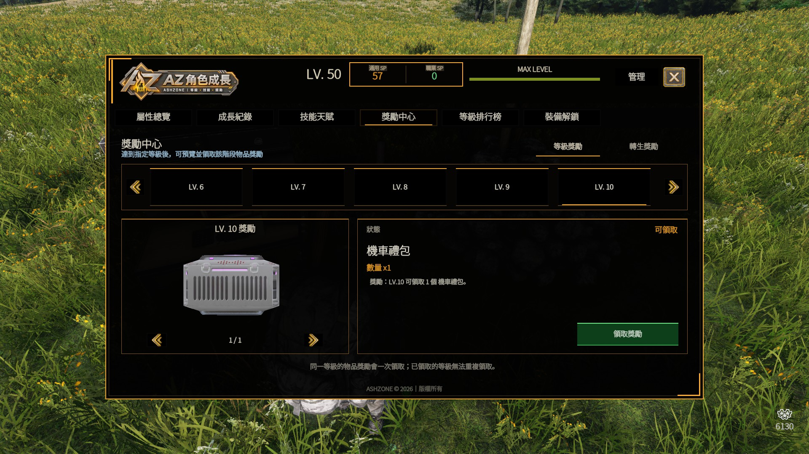
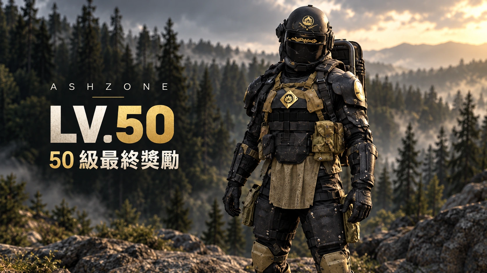
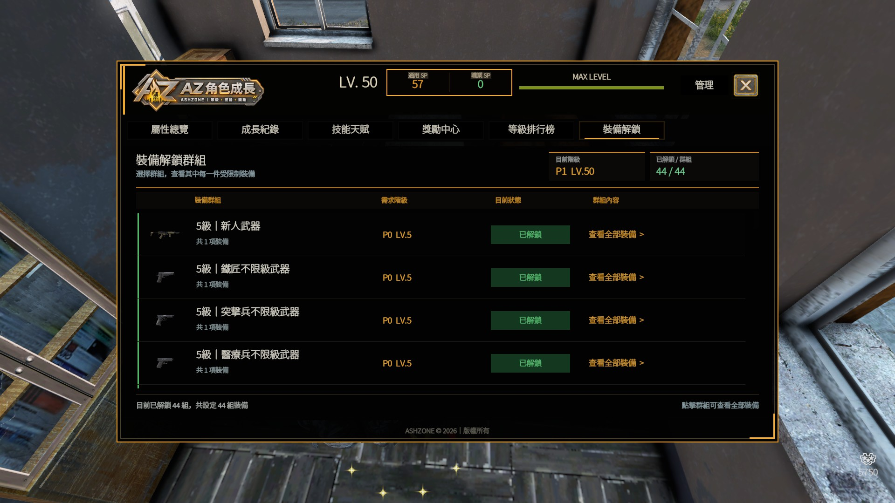

角色成長・職業系統
等級、技能、職業、裝備解鎖與轉生共同構成 AshZone 的長期角色養成。玩家可以從角色總覽查看目前等級與技能點，選擇職業建立專精，再透過升級與轉生逐步解鎖更多能力、裝備與獎勵。

人物成長介面
角色成長介面是整套系統的主入口，所有長期養成資訊都集中在這裡。
六個主要分頁
| 屬性總覽 | 查看目前 LV、技能點、職業、進度與各類核心技能投入。 |
| 成長紀錄 | 檢視角色的長期成長資料與歷程。 |
| 技能天賦 | 使用通用 SP 或職業 SP 投資不同技能。 |
| 獎勵中心 | 查看並領取等級獎勵與轉生獎勵。 |
| 等級排行榜 | 查看角色等級與長期成長排名。 |
| 裝備解鎖 | 查看各裝備群組需要的等級／轉生階級。 |
職業選擇與起始配裝
選擇職業時不只決定專精方向，也會同時選擇起始主武器、副武器、工具與職業套裝。

專精追蹤、狩獵與獵物處理；職業技能方向以打獵為主。
專精急救與醫療處置；適合支援與治療型玩家。
專精潛行與低噪音行動；適合偵察與隱蔽玩法。
專精野外生存與資源利用；適合長期探索與生存。
專精移動與體能；著重運動類技能。
專精力量與負重；適合正面戰鬥與重裝玩法。
專精製作、拆解與材料利用；使用鐵匠工藝相關技能。
技能天賦與兩種技能點
技能頁面會分開顯示通用 SP 與職業 SP。先選左側技能分類，再選擇中間的技能，右側會顯示技能說明與下一階需求。


通用 SP
角色升級與轉生後持續累積的主要技能點，可依自己的玩法投資一般技能分類。
職業 SP
選擇職業後取得的專用技能點，只能投入該職業對應的專精方向，不會與通用 SP 混用。
等級獎勵中心
達到指定等級後，可在「獎勵中心」查看對應物品。達成條件時狀態會顯示可領取，並可手動領取獎勵。


LV.50｜50 級最終獎勵
角色達到 LV.50 後，即可在獎勵中心領取 50 級里程碑獎勵。這份獎勵代表本輪等級成長完成，同一角色僅能領取一次，轉生後不會再次刷新。
IMPSET22 套裝｜50 級里程碑裝備，不支援覺醒。
① 選擇等級
用上方 LV 選單查看不同等級配置的獎勵內容。
② 確認狀態
可領取 代表已達成需求；未達等級則需繼續成長。
③ 每級一次
同一個等級的物品獎勵只能領取一次，完成轉生後也不會重新刷新同一級獎勵。
裝備解鎖與使用限制
部分武器與裝備會依角色目前的等級與轉生階級解鎖。裝備解鎖頁會直接列出群組需求與目前狀態。

怎麼看需求
- P0 LV.5：未轉生角色達到 5 級即可。
- P1 LV.20：至少完成第 1 次轉生，並在該週期升到 20 級。
- 需求未達成時，對應限制裝備無法正常使用。
群組內容
每個裝備群組可以包含一件或多件裝備。點擊「查看全部裝備」可確認這個群組實際限制哪些物品，避免只看名稱猜測。
裝備群組、需求階級與內容可能隨伺服器平衡更新調整，請以遊戲內顯示為準。
轉生與職業轉生獎勵
角色達到 LV.50 並完成職業選擇後，就能進入下一個轉生階段。AshZone 目前最高可到 P6。
轉生會保留什麼？
- 既有技能配置保留。
- 未使用的技能點保留。
- 已選職業保留，不會重新選職業。
- 已領取的等級獎勵紀錄保留。
轉生會重置什麼？
- 目前等級回到 LV.1。
- 目前等級經驗回到 0。
- 重新升級後可繼續獲得新的通用技能點。
職業轉生獎勵
獎勵中心除了「等級獎勵」之外，也有「轉生獎勵」。完成對應轉生階段後，可查看並領取自己職業對應的專屬獎勵；不同職業、不同轉生階段會有不同內容。